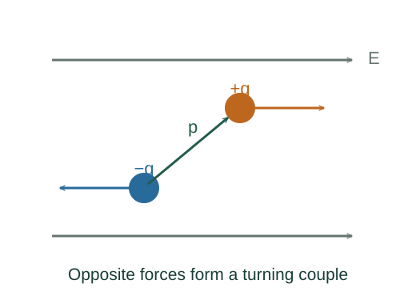

Derive the torque and energy of an electric dipole
A neutral pair of separated opposite charges can experience zero net force in a uniform field yet still rotate. Its dipole moment describes that turning effect.
What the symbols mean
𝐩 = q𝐝: dipole moment, directed from −q to +q; 𝐄: external field; θ: angle between them.
When this applies
A rigid dipole in an approximately uniform electrostatic external field. The constant in potential energy is chosen so U = 0 at θ = 90°.

Add the two forces
The positive charge feels q𝐄 and the negative charge feels −q𝐄. The net force is zero when the same field acts at both ends.
Add the torques about the centre
Each charge has a lever arm of d/2. Both forces turn the dipole in the same rotational sense, toward alignment.
Identify the vector direction
The right-hand rule gives the torque vector. For a signed angle increasing away from alignment, the rotational component is restoring: τθ = −pE sin θ.
Go deeper at this stepWhy is torque a cross product?Derive torque as the rate of angular momentumIntegrate the torque to obtain energy
Use τθ = −dU/dθ. Then dU = pE sin θ dθ, whose integral is −pE cos θ plus an arbitrary constant.
Where each equation comes from
Derived equations link to an argument below. Definitions, physical postulates and constitutive models are identified as the inputs of that argument.
Derivation of the main resultDerived result
Conditions: A rigid dipole in an approximately uniform electrostatic external field. The constant in potential energy is chosen so U = 0 at θ = 90°.
- Add the two forces. The positive charge feels q𝐄 and the negative charge feels −q𝐄. The net force is zero when the same field acts at both ends. Explain the equation used in step 1 ↗
- Add the torques about the centre. Each charge has a lever arm of d/2. Both forces turn the dipole in the same rotational sense, toward alignment. Explain the equation used in step 2 ↗
- Identify the vector direction. The right-hand rule gives the torque vector. For a signed angle increasing away from alignment, the rotational component is restoring: τθ = −pE sin θ. Explain the equation used in step 3 ↗ Why is torque a cross product? ↗
- Integrate the torque to obtain energy. Use τθ = −dU/dθ. Then dU = pE sin θ dθ, whose integral is −pE cos θ plus an arbitrary constant. Explain the equation used in step 4 ↗
Equation in step 1Derived result
What is being shown: Add the two forces
The positive charge feels q𝐄 and the negative charge feels −q𝐄. The net force is zero when the same field acts at both ends.
Starting conditions and inputs: A rigid dipole in an approximately uniform electrostatic external field. The constant in potential energy is chosen so U = 0 at θ = 90°.
Equation in step 2Derived result
What is being shown: Add the torques about the centre
Each charge has a lever arm of d/2. Both forces turn the dipole in the same rotational sense, toward alignment.
Earlier results used in this argument:
- 𝐅net = q𝐄 − q𝐄 = 0 (Derived result)
Equation in step 3Derived result
What is being shown: Identify the vector direction
The right-hand rule gives the torque vector. For a signed angle increasing away from alignment, the rotational component is restoring: τθ = −pE sin θ.
Earlier results used in this argument:
- 𝐅net = q𝐄 − q𝐄 = 0 (Derived result)
- τmagnitude = 2(qE)(d/2)sin θ = pE sin θ (Derived result)
Equation in step 4Derived result
What is being shown: Integrate the torque to obtain energy
Use τθ = −dU/dθ. Then dU = pE sin θ dθ, whose integral is −pE cos θ plus an arbitrary constant.
Earlier results used in this argument:
- 𝐅net = q𝐄 − q𝐄 = 0 (Derived result)
- τmagnitude = 2(qE)(d/2)sin θ = pE sin θ (Derived result)
- 𝛕 = 𝐩 × 𝐄 (Derived result)
A worked example
A dipole with p = 2 × 10⁻⁶ C·m in E = 1000 N/C has maximum torque 0.002 N·m. Rotating it slowly from aligned to anti-aligned requires 0.004 J.
Derivation behind this calculation ↗A point to keep straight
A nonuniform field can also exert a net dipole force. The uniform-field zero-force conclusion then no longer applies.
Check the assumptions and derivation ↗